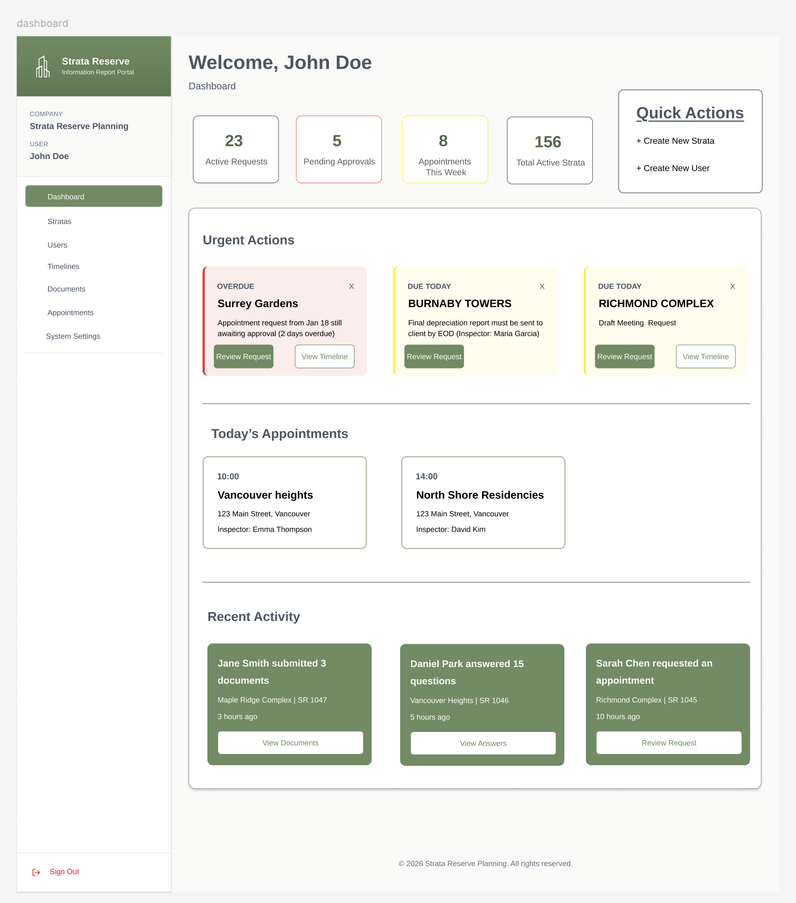
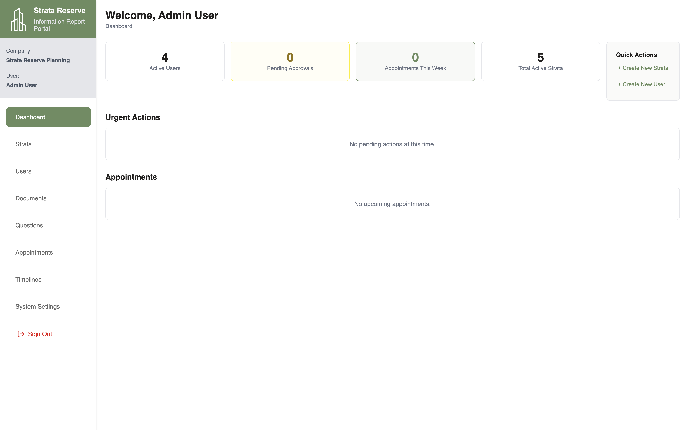

Strata Reserve Planning is a split full-stack TypeScript portal built around a role-based workflow for managing strata data collection,
required documents, surveys, timelines, appointment booking, and administrative review. This case study focuses on how the frontend and backend
were structured together so the portal could support both internal staff and client-facing tasks in one coordinated system.
Strata Reserve Planning
Case study of a school project covering a React and Vite frontend, a Hono API, Prisma data modeling,
Supabase authentication, and two parallel product experiences for admins and clients.
Role-based routing, admin and client dashboards, API design, Prisma schema, auth, and workflow integration

Dashboard target used as the visual anchor for the case study and for the overall product direction.
Role
Frontend and Backend Delivery
The project work spans the React client, the Hono API, the Prisma schema, and the role-based workflow that connects them.
Project Frame
Split Full-Stack TypeScript School Project
The repository is organized into separate frontend and backend applications with shared project documentation and a multi-step business workflow.
Primary Deliverable
Role-Based Data Collection Portal
Admin users manage strata records, appointments, reviews, and questions while clients complete surveys, upload documents, and book inspections.
Project Overview
This case study focuses on how the project was structured as a real product rather than a disconnected set of CRUD screens,
with the frontend and backend both shaped around the same reserve-planning workflow.
Background
Why this project reads as a full system instead of a single page
Strata Reserve Planning is organized around two different user experiences. Admin users need a dashboard for urgent actions,
appointment requests, document review, question management, timelines, strata records, and user management. Clients need a guided portal
for profile setup, section-specific survey questions, required document uploads, timeline milestones, appointment booking, and status updates.
That meant the work could not stop at interface mockups. The project required route protection, authentication state handling,
API contracts, database relationships, service logic, email and notification hooks, and a data model capable of connecting profiles,
strata, files, property types, appointments, surveys, and documents.
Goal
What the final build needed to achieve
Support separate admin and client route groups without duplicating the entire application shell.
Use Supabase authentication while still enforcing backend authorization through middleware and database-backed role checks.
Let clients move through a sequence of tasks: strata information, survey answers, document submission, timelines, and booking.
Give admins tools to review incoming work, monitor urgent items, manage appointments, and maintain reference data.
Keep the schema and API consistent enough that the frontend could rely on reusable hooks and shared utility code.
Role Statement
Role and Scope at the center of the case study
Role: full-stack implementation across both product surfaces. Scope included route structure, auth flow, admin and client dashboards,
data-fetching hooks, API namespaces, Prisma modeling, and the workflow logic needed to connect surveys, documents, appointment booking,
notifications, and review actions into one coherent system.
Challenge and Constraints
The main difficulty was coordinating business workflow, authorization, and data relationships across two interfaces without turning the codebase into a tangle of one-off screens.
Frontend Challenge
Two user roles needed different tools but one application foundation
The frontend could not be treated as a single dashboard with a few conditional buttons. The admin experience includes pages for dashboards,
users, strata, timelines, questions, documents, and appointments. The client experience includes guided pages for strata information,
strata members, documents, surveys, timelines, and inspection booking. Both sit inside the same React application and share auth state,
utility code, API access, and reusable components.
The challenge was therefore architectural: route groups, layouts, and hooks had to be organized so the product felt like one system,
not two disconnected apps living beside each other.
Backend Challenge
The API had to mirror the workflow rather than expose raw tables
On the backend, the project needed more than generic CRUD handlers. The Hono API is split into shared, admin, and client namespaces.
Middleware validates Supabase bearer tokens, checks admin privileges through Prisma, and then routes each request into controllers and services
that understand appointments, property type changes, activation requests, review state, and client progress.
That meant the data model had to hold together under real workflow pressure. Profiles, strata, file numbers, documents, questions,
survey responses, notifications, and appointment records all needed clear relationships instead of ad hoc joins scattered across the UI.
The hardest part of the project was not drawing another dashboard card. It was making the product behave like a complete workflow,
where admin review, client input, auth checks, and database state all point in the same direction.
Process Breakdown
The work moved through three connected phases: define the workflow, shape the frontend around role-specific routes, then build the backend and schema that made those routes useful.
01
Model the product workflow
Mapped the portal around two main actors: admin staff and client users.
Defined the main stages of the file lifecycle: setup, survey, document collection, timelines, appointment handling, and review.
Used that workflow to guide both the React route map and the Prisma schema instead of designing the frontend and backend separately.
02
Build the frontend shell and role-based navigation
Composed public, admin, and client route groups under one React application using protected routes and shared layouts.
Centralized auth session handling in the shared context so both product areas could use the same identity state.
Built reusable hooks and shared components so data-heavy pages did not each reinvent API logic, tables, modals, and status UI.
03
Wire the backend, schema, and workflow services
Split the Hono API into admin, client, and shared namespaces with middleware guarding access.
Connected controllers to shared service modules for appointments, timelines, notifications, documents, questions, and profile updates.
Used Prisma and PostgreSQL to model the business entities that both sides of the app depend on.
Beginning
The early phase established the product shape
The repository was structured as a split full-stack project with separate frontend and backend folders. From that point, the core job was to turn
reserve-planning tasks into a route map, an API surface, and a data model that described the same workflow consistently.
Middle
The middle phase focused on role-specific product behavior
The React app grew into distinct admin and client experiences with protected routes, reusable layouts, and hooks that wrapped authenticated API calls.
At the same time, the backend expanded into feature-specific controllers and services so the UI could work with meaningful business endpoints.
End
The later phase concentrated on integration and workflow coverage
The final shape of the project shows how the pieces connect: dashboards summarize live work, document and survey flows update progress,
booking logic supports appointment handling, and backend middleware plus Prisma relations keep those actions tied to real user roles and records.
Process Evidence
The project already includes dashboard captures that make the product direction easy to read: the current build and the more complete target state.

Current admin dashboard state in the repository, showing the working shell, summary cards, navigation, and primary workflow sections.Target dashboard direction used to represent the more complete workflow vision, with urgent actions, appointments, and recent activity surfaced more clearly.
Product Workflow
The project is easiest to understand as a workflow system rather than as a loose set of pages.
Client Flow
How the client-facing side is structured
A client signs in through Supabase-backed authentication and lands on a progress dashboard.
The dashboard pulls together timelines, survey completion, document counts, notifications, and appointment state.
The client can review strata information, manage strata members, answer section-based survey questions, and upload required documents.
Timeline fields and document review results feed back into progress and modal prompts.
When eligible, the client can request or respond to inspection booking and later see finalized outcomes.
Admin Flow
How the internal side supports review and coordination
The admin portal is designed around work that needs attention now. The dashboard brings together urgent property type requests,
activation requests, appointment requests, rebooking needs, upcoming appointments, and recent profile activity. Beyond the dashboard,
admins can manage users, strata, documents, questions, timelines, and appointment operations.
That makes the admin side more than a maintenance console. It is the operational surface that advances client files through the workflow,
reviews submissions, assigns appointments, and keeps the system data accurate.
Solution
The final solution keeps the frontend and backend deliberately separate in code structure, while linking them through shared roles, shared workflow language, and authenticated API contracts.
Frontend
React and Vite organize the portal into product surfaces
App composition: `App.tsx` mounts public, admin, and client route groups under one router and one auth provider.
Protected routes: admin and client pages are wrapped by `ProtectedRoute`, allowing the UI to branch by role while keeping the entry point clean.
Role-based layouts: `AdminLayout` and `ClientLayout` give each side its own navigation and screen structure without splitting the app into separate deployments.
Reusable hooks: hooks such as `useAppointments`, `useClientDocuments`, `useSurvey`, `useTimelines`, and `useNotifications` keep page components focused on product logic instead of raw fetch code.
Shared UI system: tables, tabs, modals, form fields, toasts, and utility helpers are centralized under `shared/` so the project does not repeat itself across pages.
Backend
Hono, Prisma, and services drive the workflow API
Server bootstrap: the Hono app mounts shared, admin, and client routes after logger and CORS middleware, with a simple health endpoint at `/health`.
Auth boundary: `authMiddleware` validates Supabase bearer tokens, and `adminMiddleware` confirms admin privileges through Prisma before protected admin routes run.
Service layer: shared services centralize business logic for appointments, documents, timelines, file numbers, notifications, profiles, and question workflows.
Data layer: Prisma connects the backend to PostgreSQL using a schema that models profiles, strata, property types, sections, file numbers, surveys, appointments, documents, and notifications.
Auth and Session
Supabase handles identity while the app keeps role logic local
The frontend `AuthContext` reads the Supabase session, loads the user profile, and converts raw profile rows into app-level admin, inspector, assistant, or client user objects.
The backend verifies each bearer token independently through Supabase before it trusts any request.
Admin authorization is not inferred from the frontend alone; it is checked again through Prisma by reading the user type from the database.
This pattern lets the UI stay responsive while still treating the API as the real trust boundary.
Data Model
The Prisma schema is organized around real business entities
`Profile`, `Strata`, `StrataProfile`, and `FileNumber` establish the base relationship between people, organizations, and active files.
Lookup tables such as `PropertyType`, `Section`, `Service`, and `QuestionCategory` support flexible configuration.
Survey and document work is represented through question, response, and file-number requirement tables instead of hard-coded frontend assumptions.
Appointment and notification records connect workflow events back to actual users and files.
Architecture
System overview
Browser SPA (React + Vite)
|
| authenticated requests
v
AuthContext + shared hooks
|
v
Hono API
- /api/lookups/*
- /admin/*
- /client/*
|
+-> authMiddleware (Supabase token validation)
+-> adminMiddleware (Prisma role check for admin routes)
|
v
Controllers -> Shared Services -> Prisma
|
v
PostgreSQL
- profiles
- strata
- file numbers
- documents
- survey questions and responses
- appointments
- notifications
Technical Reasoning
Why this structure fits the project
The strongest architectural choice in the repository is the decision to separate by role and by responsibility at the same time.
The frontend is divided into admin, client, and shared areas. The backend is divided into admin, client, and shared routes and services.
The data model sits underneath those layers as the common source of truth. That shape keeps the system easier to reason about because each side of the app can evolve around its own workflow without losing a shared foundation.
In practical terms, that means a dashboard card, an appointment review modal, and a client booking flow are not isolated features.
They all connect back to the same route boundaries, service logic, and relational data model.
Role Contributions
The case study is strongest when treated as end-to-end workflow work rather than as separate frontend and backend tasks.
Frontend Contributions
Route and layout structure: organized the React app so public, admin, and client surfaces can coexist cleanly.
Dashboard behavior: supported dashboards that summarize operational state rather than only displaying static cards.
Workflow pages: connected client-facing pages for documents, surveys, timelines, strata information, and booking into a guided flow.
Reusable UI and hooks: leaned on shared components, modals, and data hooks so the product could scale beyond a single screen.
Backend Contributions
API organization: structured the Hono server into role-aware route groups instead of a flat endpoint list.
Authorization: tied Supabase auth and Prisma role checks together so backend permissions do not depend on frontend trust.
Service-oriented logic: supported business workflows through shared services for appointments, notifications, timelines, documents, profiles, and questions.
Schema design: used Prisma models to capture the relationships that the portal depends on rather than leaving those joins to ad hoc frontend logic.
Outcome and Reflection
The resulting project is valuable because it shows an application that is already thinking in terms of product workflow, permissions, and data integrity instead of only isolated page output.
Outcome
What the project delivered
A split full-stack architecture with a React and Vite frontend and a Hono and Prisma backend.
Role-based admin and client experiences built on a shared authentication and routing foundation.
A portal workflow covering surveys, documents, timelines, notifications, and appointment handling.
A database-backed API surface that reflects business processes instead of exposing unstructured table access.
Reflection
What the case study shows most clearly
Frontend and backend structure matter most when multiple user roles depend on the same data in different ways.
Auth is not only a login feature; it shapes route design, middleware, API boundaries, and the user model itself.
A strong schema reduces guesswork in the UI because the workflow entities already exist in stable relationships.
The project reads best as a system integration exercise: user journey, permissions, services, and data all had to align.
Next Iteration
Areas that would benefit from a longer timeline
More polished dashboard refinement so the current build closes the gap with the stronger target layout already documented in the screenshots.
Broader automated test coverage for route protection, workflow edge cases, and service-layer business rules.
Further reporting and analytics features so the portal can surface project health beyond task completion and pending review counts.
Continued cleanup of shared types and route contracts as the product expands to more internal roles and more finished client outputs.